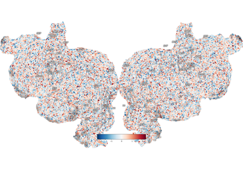
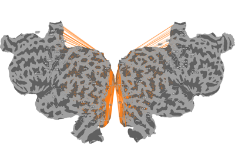
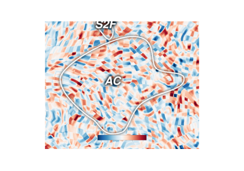

Quickflat Examples¶
Examples demonstrating how to create flatmaps.


Plot dropout regions on the flatmap
Plot dropout regions on the flatmap



Plot which vertices are inside the same voxels
Plot which vertices are inside the same voxels


Ignore NaN (not-a-number) values in thickness mapping
Ignore NaN (not-a-number) values in thickness mapping

Plotting a zoomed view of one ROI
Plotting a zoomed view of one ROI